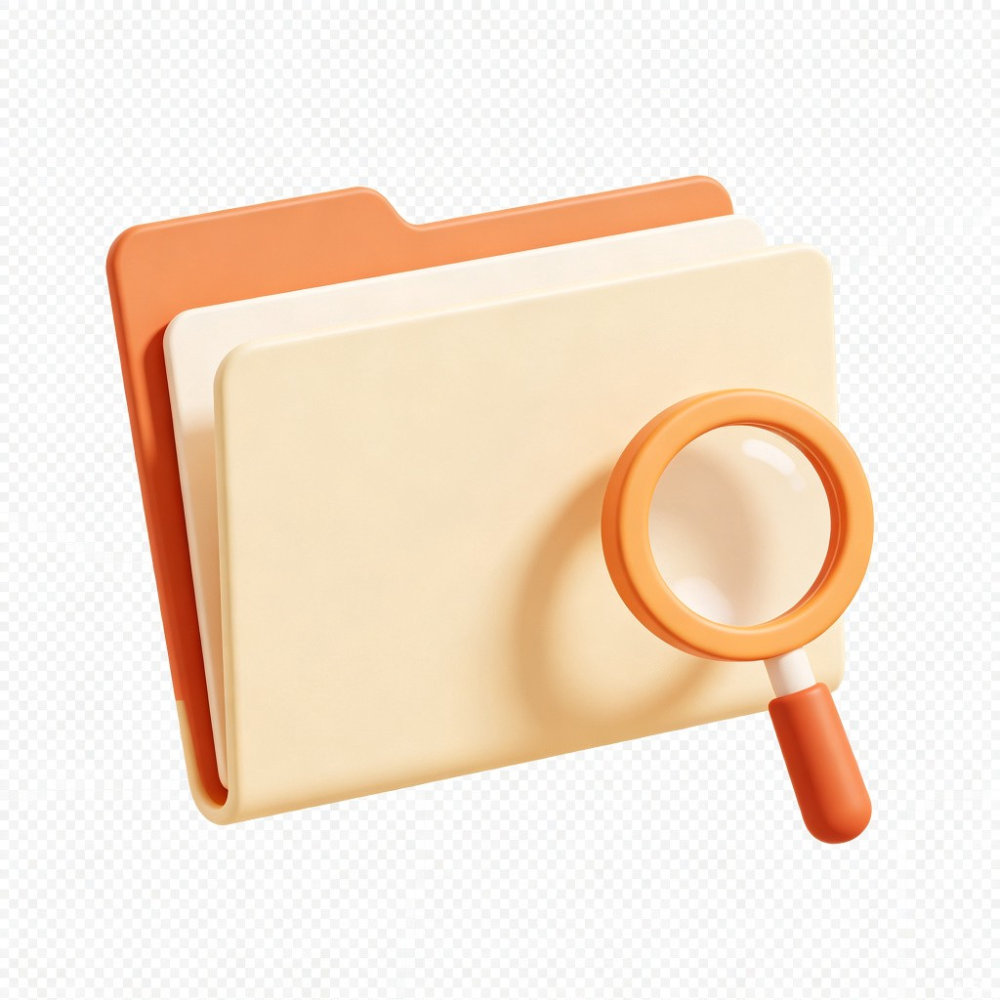

AI求职助手
首页
新生成
设置
新生成
菜单
首页
新生成
历史记录
设置
开始生成
历史记录
查看你之前生成的所有求职准备报告
共 5 份报告
全部岗位
大模型算法
大模型应用
AI产品
其他
最新优先
评分最高
大模型应用开发工程师
已完成
RAG
Agent
MCP
2026年7月3日 14:23
准备时间 3个月
92分
大模型算法工程师
已完成
微调训练
推理优化
2026年6月28日 09:15
准备时间 6个月
88分
AI产品经理
已完成
Prompt工程
RAG
2026年6月20日 16:42
准备时间 2个月
85分
机器学习工程师
已完成
传统ML
深度学习
2026年6月15日 11:08
准备时间 3个月
79分
大模型推理优化
已完成
推理优化
TensorRT
2026年6月10日 20:33
准备时间 1个月
90分

还没有生成记录
描述你的求职需求，开始第一份报告
开始生成
上一页
1
2
3
下一页